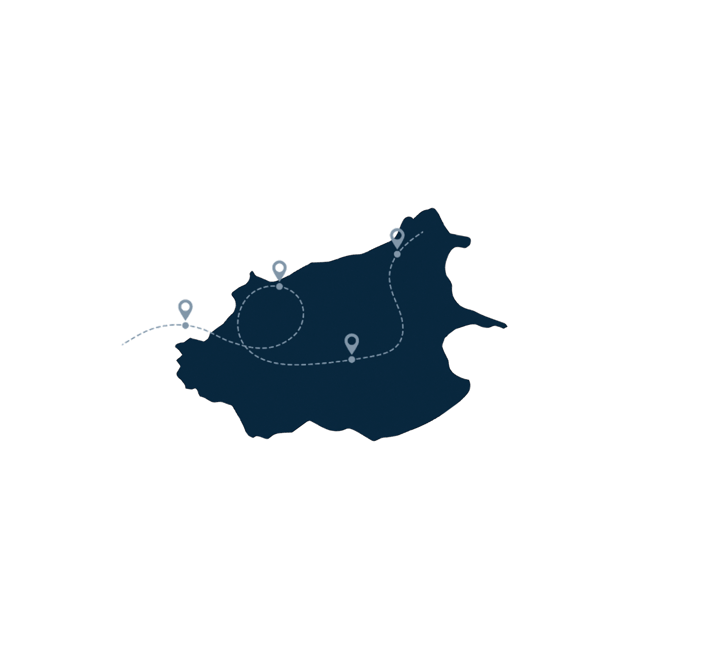
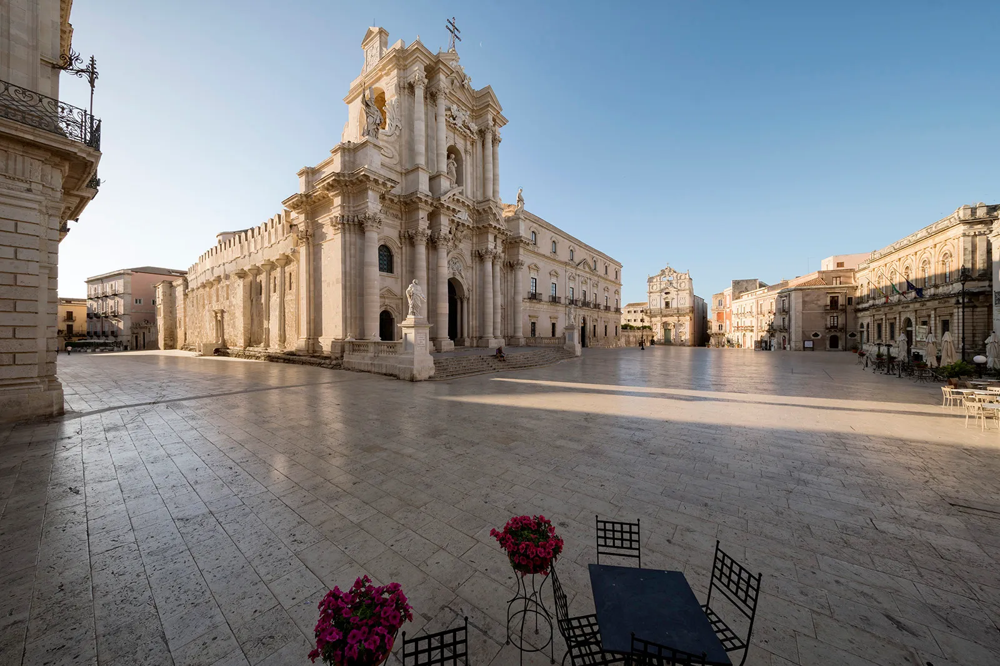
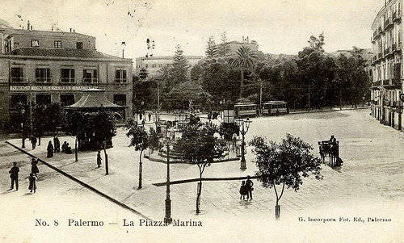
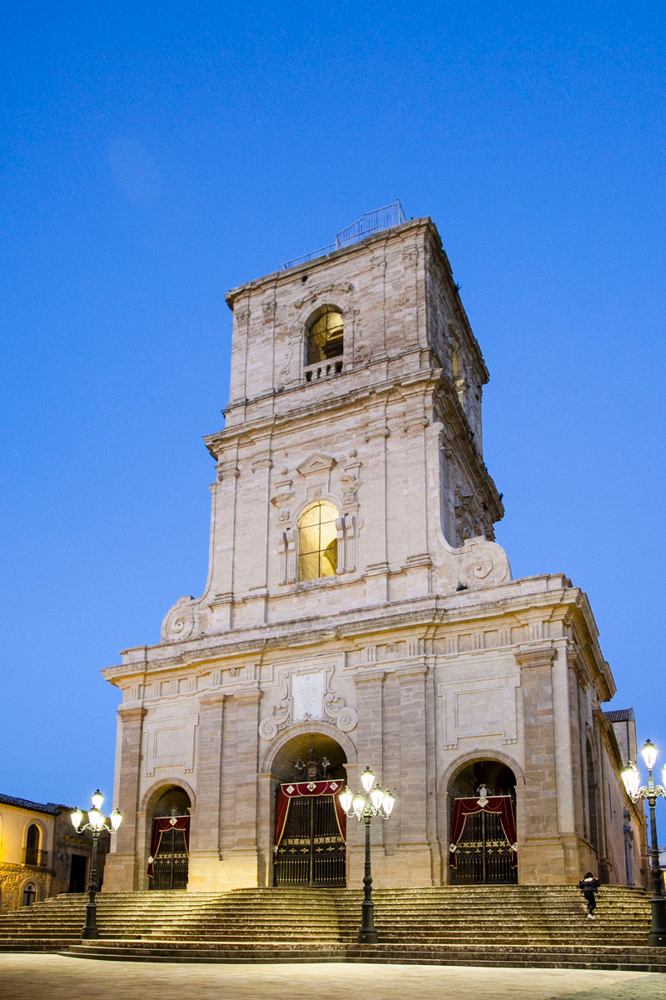
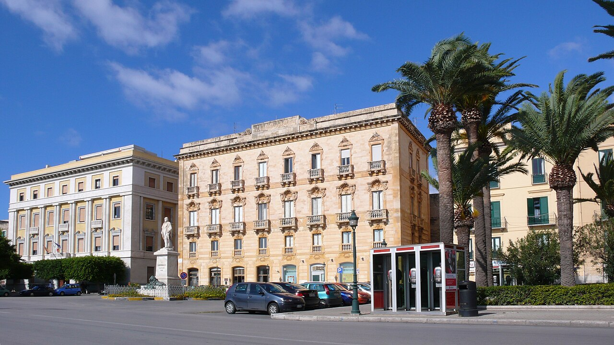

PIAZZA DUOMO
Siracusa
Piazza Duomo è uno degli spazi urbani più eleganti e
rappresentativi della città di Siracusa. Situata nel cuore
dell’isola di Ortigia, il nucleo storico della città, la piazza
rappresenta un luogo di valore storico, dove si
sovrappongono secoli di storia che vanno dall’antica
Grecia fino al periodo barocco.

Il principale edificio della piazza è la Cattedrale di Siracusa, uno dei monumenti più affascinanti della Sicilia. La chiesa è un esempio unico di stratificazione architettonica: la struttura incorpora infatti le colonne doriche dell’antico tempio greco dedicato ad Atena.
All’interno della cattedrale è ancora possibile osservare le massicce colonne del tempio, integrate nella struttura della chiesa. Questo rende l’edificio uno dei più straordinari esempi di trasformazione architettonica del Mediterraneo, dove un tempio pagano è stato progressivamente trasformato in luogo di culto cristiano.
La facciata attuale della cattedrale risale al periodo barocco ed è caratterizzata da colonne, statue e decorazioni scolpite nella pietra calcarea locale, che conferiscono all’edificio un aspetto luminoso e monumentale.
La facciata attuale della cattedrale risale al periodo barocco ed è caratterizzata da colonne, statue e decorazioni scolpite nella pietra calcarea locale , che conferiscono all’edificio un aspetto luminoso e monumentale.
Attorno alla piazza si affacciano importanti palazzi storici che contribuiscono a definire l’eleganza dello spazio urbano. Tra questi si distinguono il Palazzo Beneventano del Bosco e il Palazzo Senatorio, edifici barocchi che testimoniano il prestigio delle famiglie nobiliari siracusane
La pavimentazione della piazza e l’ampio spazio aperto permettono di apprezzare pienamente la scenografia architettonica degli edifici, creando una prospettiva armoniosa che rende Piazza Duomo uno degli spazi urbani più suggestivi della Sicilia.
La storia di Piazza Duomo affonda le sue radici nell’antichità. L’area su cui oggi sorge la piazza era infatti già uno dei luoghi più importanti della città greca di Siracusa. Qui si trovava l’antico Tempio di Atena, costruito nel V secolo a.C. durante il periodo di massimo splendore della città.
Nel corso dei secoli, il tempio venne trasformato più volte: prima in chiesa cristiana durante il periodo bizantino e successivamente modificato durante l’epoca normanna. Questa continuità storica ha fatto sì che l’edificio sacro mantenesse elementi architettonici appartenenti a diverse epoche.
La configurazione attuale della piazza è legata soprattutto alla ricostruzione successiva al Terremoto della Sicilia del 1693, che devastò gran parte della Sicilia orientale. Dopo la distruzione, l’area fu riprogettata secondo i principi dell’urbanistica barocca: gli edifici vennero ricostruiti con facciate monumentali e con una disposizione studiata per valorizzare la prospettiva della cattedrale.
Questa ricostruzione trasformò Piazza Duomo in uno degli esempi più armoniosi di spazio urbano barocco in Sicilia, mantenendo però le tracce dell’antica storia greca della città.

Dal punto di vista urbanistico, Piazza Duomo rappresenta il principale spazio pubblico di Ortigia. La piazza si sviluppa come un grande spazio aperto che collega diversi percorsi del centro storico e funge da punto di riferimento per residenti e visitatori.
La disposizione degli edifici che la circondano crea una scenografia architettonica tipica delle piazze barocche, in cui la cattedrale diventa il punto focale della prospettiva urbana. L’uso della pietra calcarea chiara contribuisce inoltre a riflettere la luce del sole, rendendo la piazza particolarmente luminosa e suggestiva.
Oggi Piazza Duomo è uno dei luoghi più frequentati di Siracusa. Durante il giorno ospita turisti provenienti da tutto il mondo, mentre la sera diventa un luogo di incontro animato da ristoranti, caffè e locali che si affacciano sulle facciate storiche della piazza.
Lo spazio ospita anche numerosi eventi culturali e religiosi, tra cui celebrazioni dedicate alla patrona della città, Santa Lucia, che ogni anno attirano migliaia di fedeli e visitatori.


Piazza Municipio, Agrigento

Piazza Marina, Palermo

Piazza Duomo, Enna

Piazza Garibaldi, Caltanissetta

Piazza Garibaldi, Trapani